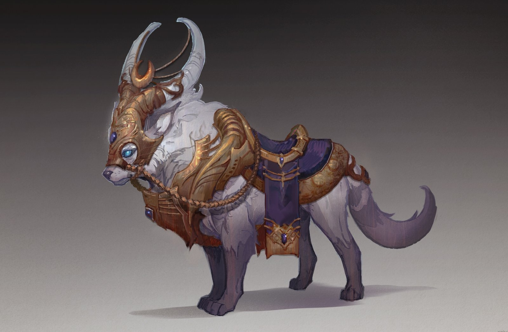

Force

Résistance
Dextérité
Magie
Ingénierie

Environnement : Archipel - île du Havre dansant - Swinford
Durée de vie moyenne : 200 ans
Taille : M
Système politique : Communauté dirigée par un chef, défini par son esprit vif
Statut politique : Membre de la ligue de Vésir
Relations hostiles : Peuples vénérant Ga'ar
Alliés : Ligue de Vésir
Croyance : Myzias - Ysiiri
Force
Résistance
Dextérité
Magie
Ingénierie
Capacités innées : Voir les flux magiques
Facilités magiques : Lumière - Arcanes
Impossibilités : Magie noire
Les Bords-du-Monde séparent les Tertres des Mers, leur falaise semble infranchissable, pourtant, Ga’ar y fit s’élancer une troupe de traitres démons, afin de faire s’étendre son pouvoir jusqu’à l’Archipel. Or, l’évolution, les siècles et la douleur de leur chute les fit évoluer, s’adapter, rejeter les ordres de leur créateur. Ainsi naquirent les tieflings qui peuplent désormais l’Archipel, dans l’ombre d’un complexe immensément grand ; Swinford. Sauvés jadis par la ligue de Vésir, ils en sont maintenant membres, c'est qui leur offrit des terres.
Profil type : Réfléchi - D’esprit - Serein - Pieux
Métiers répandus : Joaillier - Paladin
Alimentation : Omnivore - Chasse et cueillette
Montures :
Si ils ont des gênes démons, ils n’ont pour autant plus rien des envies de sang qu’ils eurent jadis. De plus, leur non-affiliation au Néant s’exprime par le culte, priant Myzias comme Ysiiri de sauver leurs cousins hantant les Tertres-du-Temps. Cet aspect religieux se répercute sur leur façon de vivre étant donné qu’ils ne se battent qu’au nom des leurs croyances et sont des experts dans un art qui aurait pu leur sembler inatteignable, celui de la lumière.
En sommes, ce peuple est l’affirmation que ce qui était, peut être, sous une autre forme, tels les bijoux qu’ils forment de l’améthyste qui compose leur fief.
Facilités magiques : Magie noire - Feu - Démonisme
Impossibilités magiques : Lumière - Arcanes
Faculté supplémentaire : Force physique
Réduction de l'ingénierie à 0/5
Un tiefling ne poursuit pas le processus conventionnel lorsqu’il est corrompu. Si les tieflings normaux ont une peau entre le blanc et le violet, passant par le bleu et le gris, un tiefling corrompu en a une rose, rouge ou noire.
Au-delà de son aspect, c’est aussi ses attributs démoniaques qui ressortent, il devient une créature croisée entre un peuple résilient et celui qui fit son détriment. Servant à nouveau Ga’ar, les origines de son sang ressurgissant font bien souvent d’eux des créatures sanguines et violentes.
De plus, contrairement aux autres types de corrompus, les tieflings peuvent se reproduire entre eux.
Nombre d'OC de cette race sur Yndrill: -